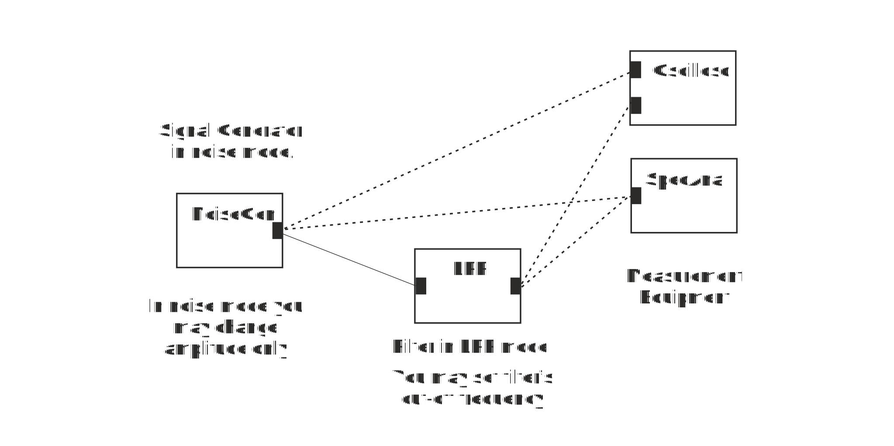

Make a block diagram as in Figure 5 where Signal Generator is set to Noise mode.
Figure 5 Noise in Time and Frequency domain
1. Use the oscilloscope to measure the noise signal at the output of the signal generator. What kind of signal it is?
2. Measure the input signal with spectrum analyser. How does the spectrum of the noise signal look like?
3. Set cut of frequency of LPF to 20 kHz. Look at the output of the filter with oscilloscope. What has happened to the noise signal shape because of filtering?
4. Measure output signal of the low pass filter with the spectrum analyser. What has happened to the spectrum of noise?
5. In general, what happens to signal shape when high frequency content is removed?
When you have answered all the questions you can submit your answers.
Test of final Exercise passed. Congratulations, you have passed Assignment: Signals in Time and Frequncy Domain
Test failed. Consider again answers that are not correct